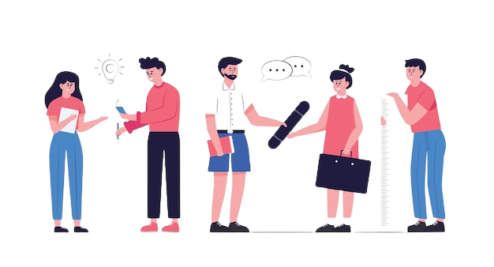
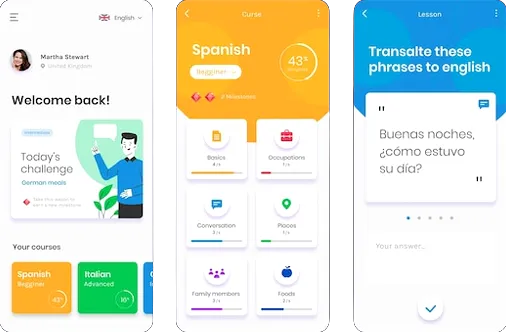

BELAJAR MANDIRI
Belajar mandiri adalah pendekatan belajar di mana individu berusaha untuk mengidentifikasi kebutuhan belajar mereka sendiri, menetapkan tujuan belajar, menemukan sumber daya yang diperlukan, dan mengevaluasi pengetahuan mereka
sendiri. Jika Anda menjelajahi dunia belajar mandiri seperti banyak siswa dan profesional lainnya yang terkurung di rumah karena pandemi, Berikut beberapa contoh di bawah ini:

Pilih Sumber Belajar Yang Kredibel
Verifikasi sumber belajar Anda untuk kredibilitas. Sementara internet dibanjiri sumber daya, tidak semuanya akurat dalam pengetahuan dan dapat diandalkan. Karena itu, bersikaplah skeptis, periksa referensi, dan biasakan
membandingkan informasi yang Anda temukan di berbagai sumber.

Bagikan Pengetahuan Anda dan Berkolaborasi
Untuk berbagi pengetahuan dengan orang lain, kita harus melakukan upaya sadar untuk memahami informasi dengan lebih baik. Anda dapat terhubung dengan individu yang berpikiran sama dan berkolaborasi dengan mereka melalui
komunitas online, platform media sosial, forum diskusi, dll.
Terapkan Apa yang telah Kita Pelajari
Cara terbaik untuk mempertahankan apa yang telah Anda pelajari dan menguji pengetahuan Anda adalah dengan benar-benar menerapkannya di dunia nyata. Jika Anda mempelajari bahasa baru, Anda dapat berlatih berbicara dengan orang
lain yang mahir atau masih mempelajarinya seperti Anda. Jika Anda belajar desain grafis, Anda dapat menerapkan apa yang telah Anda pelajari untuk membuat infografis atau halaman web.
Teknik Belajar Mandiri
Belajar mandiri terkadang bisa sangat sulit dan sepi. Berikut adalah beberapa teknik yang efektif untuk membantu Anda menjaga hal-hal tetap menarik, mudah, dan produktif.
Membaca
Siapa pun dapat membaca buku, tetapi dalam hal belajar mandiri, Anda mengambil langkah lebih jauh dan benar-benar menginternalisasi apa yang Anda baca. Anda dapat mencatat dan membuat koneksi saat Anda membaca dan belajar.
Internet dipenuhi dengan artikel blog dan buku yang dapat Anda pilih berdasarkan kebutuhan belajar Anda. Atau Anda sebenarnya bisa membeli buku atau meminjamnya dari perpustakaan, yang juga bisa Anda lakukan secara online.
Video Pendidikan
Video menyediakan cara yang mudah dan menarik untuk dipelajari. Mereka saat ini digunakan di seluruh sekolah dan universitas sebagai alat pendidikan untuk meningkatkan pengalaman belajar siswa – sekarang lebih dari sebelumnya
karena kebanyakan siswa belajar dari jarak jauh. Ada berbagai jenis video yang dapat Anda gunakan untuk mendidik diri sendiri, mulai dari film hingga klip video 50-60 detik. Temukan mereka di Pembelajaran YouTube, TEDed, BBC
Bitesize, Google Video, dan Pendidikan Geografis Nasional


Pembelajaran Menggunakan Aplikasi dan Software
Aplikasi menyediakan cara yang menghibur sekaligus efektif untuk mengembangkan pengetahuan Anda. Hal terbaik tentang menggunakan aplikasi adalah Anda dapat menggunakannya di perangkat seluler Anda dan melanjutkan proses belajar
Anda di mana pun Anda berada. Berikut adalah beberapa pembelajaran web dan aplikasi seluler untuk membantu Anda memulai: Duolingo, Pembicaraan TED, kamus.com, dan Amazon Kindle